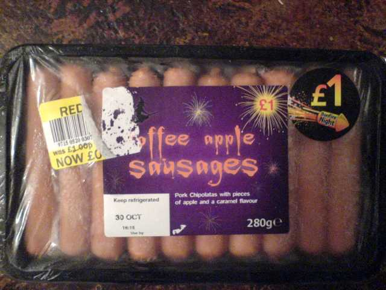

Saturday, October the 31th, 2009
back to: title, date or indexes

My thanks go to OutaSpaceman for sending this photograph of a packet of what are no doubt extremely toothsome toffee apple sausages. He asks “Will they protect me when ghouls attack?”
Indeed they will. To be more precise, they will actually deter any attack. The last point in the government Ghoul Czar's handy checklist referred to the preventative measure of nobbling a ghoul so it is incapacitated from launching an attack in the first place. Toffee apple sausages are absolutely perfect for this purpose.
I need hardly explain why ghouls are simultaneously attracted and repelled by this combinatory foodstuff. You do not even need to open the packet. Simply take a saucer from your crockery cupboard and place it on the floor, as you might do if intending to treat your cat to some milk. Instead of pouring milk into the saucer, however, just place the packet of toffee apple sausages on it, unopened, and go about your business, whatever that business may be, whether it is pickling the tiny bones of a wren or rearranging your collection of Vinder's soccer coupons in their leather-bound album.
When a ghoul comes a-shimmering and a-groaning into your homestead, it will be lured by the toffee apple sausages, and hunker over the saucer, befuddled. One cannot speak of its brain being discombobulated, for ghouls do not have brains as such. Whatever that hideous insubstantial blob nestling within its ghastly head may be, it is not a brain. But the blob will throb in the presence of toffee apple sausages, and if the ghoul lingers long enough over the saucer, its head-blob will either shrivel or explode, depending on what category of ghoul it is. The one thing it will not be able to do is to summon the wherewithal to launch an attack.
It will have been successfully nobbled.
There is much else that can be said about the commingling of sausage and toffee apple, quite irrespective of ghouls, but now I have to go and make a few changes to my exquisite hand-drawn map of Blunkett-by-the-Blears.
Hooting Yard on the Air, October the 19th, 2009 : “The Ballad Of Sopwith Tim” (starts around 15:02)